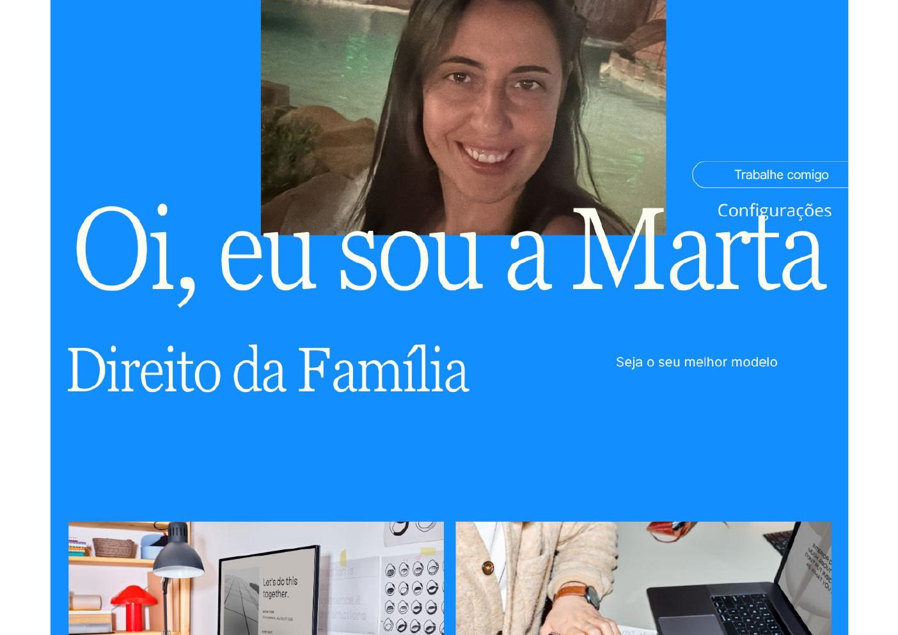

01
Direito da Família
Registre aqui um estudo, seminário ou pesquisa relacionado ao Direito da Família.
Projeto acadêmicoPORTFÓLIO PESSOAL
Direito da Família
Conhecimento, empatia e dedicação para construir caminhos mais justos.
Conheça meu perfil
Um pouco sobre mim e minha trajetória
APRESENTAÇÃO
Olá! Sou Marta, tenho 42 anos, sou casada, mãe de duas filhas e moro em Osasco, São Paulo. Tenho interesse pela área de Direito da Família, um campo que envolve relações humanas, diálogo e a busca por soluções responsáveis.
Este portfólio reúne minha apresentação, projetos e áreas de desenvolvimento. O objetivo é compartilhar minha trajetória e registrar aprendizados, experiências e próximos passos.
Personalize: acrescente aqui sua formação, instituição de ensino, experiências e objetivos profissionais.
Seja o seu melhor modelo.
Uma ideia para guiar minha jornadaTRABALHOS E APRENDIZADOS
Espaço para apresentar atividades acadêmicas, pesquisas e trabalhos desenvolvidos.
Registre aqui um estudo, seminário ou pesquisa relacionado ao Direito da Família.
Projeto acadêmicoConte sobre um tema pesquisado, os objetivos do trabalho e o que você aprendeu.
PesquisaInclua uma apresentação, relatório ou atividade que represente sua evolução.
DesenvolvimentoOs textos dos cartões são modelos para edição. Substitua-os por projetos reais antes de publicar.
DESENVOLVIMENTO
Competências que podem ser ampliadas ao longo da formação e da experiência.
Expressar ideias com clareza.
Buscar e organizar informações.
Planejar tarefas e prazos.
Desenvolver novos conhecimentos.
Edite esta lista para refletir habilidades que você realmente possui ou está desenvolvendo.
VAMOS CONVERSAR?
Será um prazer receber sua mensagem.
E-mail: marta.fernandes@yahoo.com.br · Osasco – SP